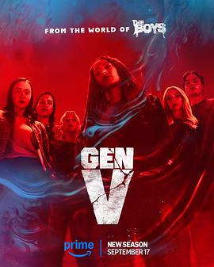

6.4
V世代 第二季
Gen V Season 2
2025
美国
评分 6.4
导演:
史蒂夫·博伊姆
演员:
洁丝·辛克莱 / 丽兹·布罗德威 / 麦迪·菲利普斯 / 德雷克·卢 / 伦敦·托尔 / 阿萨·格尔曼 / 哈米什·林克莱特
类型:
剧情,动作,科幻
剧情简介
在血腥与荣耀并存的戈多尔芬大学，校园的空气弥漫着权力与恐惧的味道。美国在祖国人的铁腕之下逐渐习惯新的秩序，新任校长登场后，宣布一项史无前例的计划——让学生成为更纯粹的“武器”。课程被改写，训练变得残酷，鲜血取代了荣誉勋章。曾被歌颂为英雄的凯特和萨姆走上讲台，享受光环的同时，也背负了难以洗净的过去。玛丽、乔丹和艾玛三人从灾难般的事件后归来，身上带着无法愈合的创口。他们在教室里装作平静，夜晚却在宿舍里做噩梦。玛丽开始怀疑，校方的课程不仅是训练，更是洗脑；乔丹的双重性别力量愈发不稳；艾玛在不断缩小的身体里寻找自我。镜头扫过血迹未干的实验室、暗处闪烁的监控灯——每一处都暗示着戈多尔芬的“教育”，从来不是教育，而是控制。随着调查深入，他们无意间揭开一个尘封于上世纪六十年代的秘密计划。那个项目曾被认为终止，却依旧在暗中运行，为“超人类战争”储备新的牺牲品。玛丽在研究室发现父亲的旧档案，那一刻她明白自己并非幸运的被选者，而是实验的延续。整季节奏紧绷，暴力与讽刺并存。走廊里的血迹被清洗干净，学生会换上新制服，表面秩序依旧，而暗处的尖叫声从未停歇。导演史蒂夫·博伊姆用冷色调捕捉年轻超能者的崩溃与觉醒：当权力成为信仰，人性便成了祭品。《V世代 第二季》延续《黑袍纠察队》的冷峻风格，却更加年轻、更加疯狂。它揭示成长的残酷真相：在这个世界里，英雄不是天生的，他们只是活得够久的幸存者。